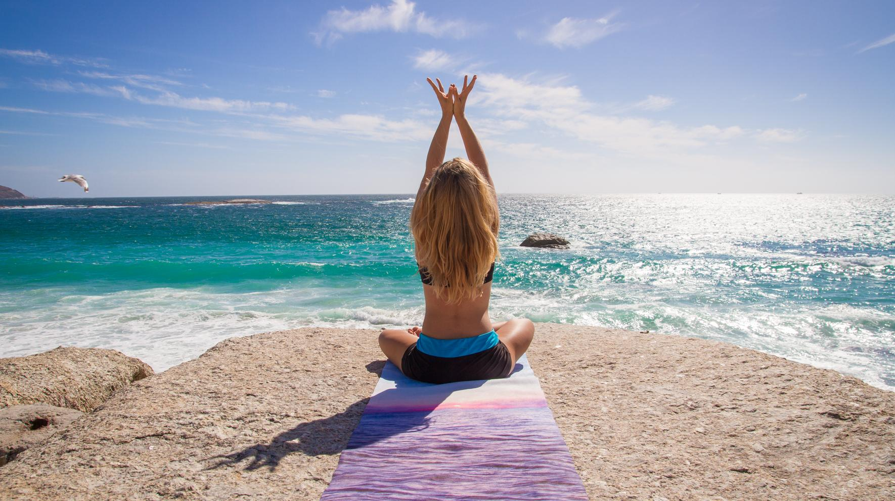

Une usine spécialisée dans la fabrication d'équipements de yoga et de fitness, à laquelle font confiance des marques du monde entier.
Fondée en 2013 et dont le siège social est situé à Xiamen, dans la province du Fujian, la société SANFAN est l’un des principaux fabricants OEM/ODM de tapis de yoga et d’articles de sport. Notre site de production se trouve à Jinjiang, au cœur de la « ceinture des articles de sport » chinoise.
Nous proposons des services sur mesure de conception, de développement, de fabrication et d'exportation à nos clients du monde entier. Notre gamme comprend des tapis de yoga, des hamacs de yoga aérien, des roues de yoga, des rouleaux en mousse, des blocs, des ballons, des bandes de résistance et un large choix d'équipements de fitness.
Avec plus de 600 ouvriers qualifiés et des machines de pointe, nous garantissons une production à haut rendement et de grande qualité, ainsi que des livraisons dans les délais, à des prix compétitifs. Notre équipe de service est disponible 24 heures sur 24 pour assister nos clients.

Un fabricant à intégration verticale situé dans le Fujian : R&D, production et contrôle qualité sous un même toit.
| Capacité de production mensuelle | |
|---|---|
| Tapis de yoga | 200 000 pièces par mois |
| Sacs de sport | 150 000 pièces par mois |
| Vêtements de yoga | 120 000 pièces par mois |
| Leggings de yoga | 100 000 pièces par mois |
| Blocs de yoga | 100 000 pièces par mois |

Moussage → Découpe → Moulage → Contrôle qualité → Emballage.
Matériau expansé selon les spécifications
Découpé sur mesure avec précision
Moulé et fini
Contrôlé par lot
Prêt à être expédié
Six étapes claires, de la conception au produit fini.
Partager les caractéristiques techniques
Citation et illustration
Échantillon physique
Verser un acompte
Traitement en masse
Contrôle et expédition
Formulation des matériaux et développement de produits
Dimensions, épaisseur, couleur et finition de surface sur mesure
Impression de logos, gaufrage et conception d'emballages
Contrôle qualité interne et traçabilité des lots
ISO 9001, SGS, BSCI, 1688 Super Factory et Made-in-China Audited.

Demandez dès aujourd'hui un devis personnalisé et des échantillons gratuits.
Contactez notre équipe